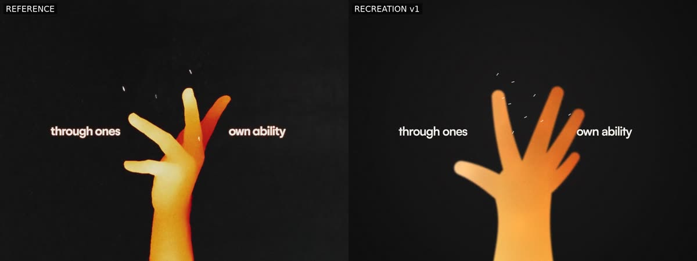
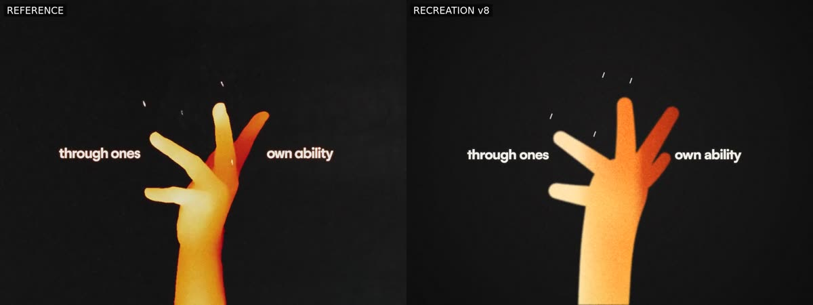
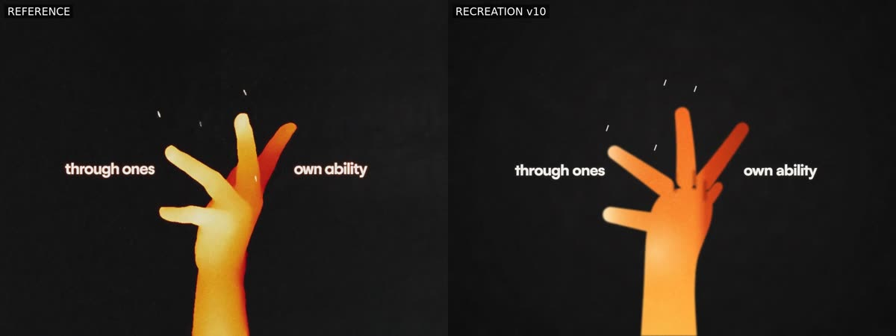
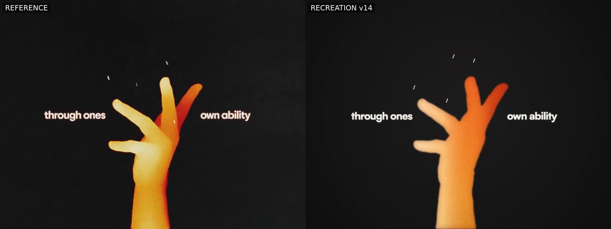

How I made this
Every message I typed into Claude Code to make this, and what Claude did after each one.
A replay of the recorded session from 6 Oct, 20:14 to 7 Oct, 15:36 UTC. It shows my 21 project messages exactly as I typed them, Claude’s visible replies, and a selection of its 492 tool calls. Claude’s private reasoning isn’t part of what’s shown.
Opus 5.5, high effort, auto mode
~/dev
[local media folder redacted] analyze the mp4 here and use the mp3 as the video. But replicate this video from scratch, make it identical. Got all out on motion effects, transitions, icons, to mimic this video exactly. have a judge of sonnet 5.5 critics at the end analzye so you can iteratively loop until it looks the same.
⋮ 6 more steps here. Open them in the full session.remember to do all work in wsl and create a project and init it to github as wellTyped while Claude was still working, so Claude Code queued it.
⋮ 11 more steps here. Open them in the full session.~/dev/love-motion-recreation (git initialized). Now setting up the renderer (HTML canvas → Playwright frame capture → ffmpeg with your mp3) and grabbing fonts.
spin up another sonnet general purpose to create a website that hosts via tailscale accessibile the current version with a description etc and the video
tailscale serve, not the public funnel).continually upddate the website with the new versions and also append the old versions in each version change ensure to spin up a sub agent sonnet for that
Left out of this replay. Claude updating its own memory notes, which is unrelated to the project, 3 steps.
⋮ 3 more steps here. Open them in the full session.scripts/publish-site.sh --id iterN … adds each new version to the history; re-running it for an existing version updates that entry. For each future version I'll message this same agent to publish it, so nothing on the site gets overwritten.
The final 2880×2160 render of iteratio […]Left out of this replay. My operational message (status check) and the work it started, 2 steps.
Great when that's done, then create another video showing the two with a side by side comparison. We should do this for every new version too. The website should have each version + the video + the side by side comparison
⋮ 1 more step here. Open it in the full session.scripts/sidebyside.sh, puts the reference on the left labelled REFERENCE and the recreation on the right, at 2880×1080 with your mp3. I tested it on the iteration 6 preview and the length, resoluti […]is v1 the og video? Rememebr I want side by side with original and the claude made one
Okay nice run thru judge again, continue iterating as this website builds
[local media folder] :
- recreation_v6_4k.mp4: 2880×2160, 23.976 fps, 20.46s, with your mp3 (194 MB).
- recreation_v6_sidebyside.mp4: your original on the left and v6 on the right, 2880×1080 (20 MB).
The site agent is still rebuilding v1–v5 and making a side-by-side for every version; it will add the 4K and its side-by-side once it gets there. When the round-6 notes come back I'll make v7, render its preview and side-by-side, and have the site agent publish it as a new version, so v1–v6 stay on the site.Few things I noticed, the hand is off and the head shape is off, and the grainyness is off.Typed while Claude was still working, so Claude Code queued it.
⋮ 1 more step here. Open it in the full session.
Hmm programmatically compare the face and hand shape it's still not there.Typed while Claude was still working, so Claude Code queued it.
⋮ 1 more step here. Open it in the full session.scripts/shape-compare.js. It grabs the same frame from the original and from our render, pulls out the orange figure in each, and measures how much the two shapes overlap: 1.0 would be an identical silhouette. It also reports widths row by row and saves an outline overlay (cyan = original, red = ours), so I could see exactly where they differed.
| Frame | v9 | v10 |
|---|---|---|
| Head @ 5.0s | 0.745 | 0.822 |
| Head @ 4.6s | — | 0.76 |
| Hand @ 14.6s | 0.448 | 0.783 |
| Hand @ 15.0s | — | 0.828 |
What the numbers show […]
ya the hand is really the main thing that's still wrong, it just doesn't look like a hand. Like the ref.Typed while Claude was still working, so Claude Code queued it.
⋮ 10 more steps here. Open them in the full session.No it still looks like a balloon, we should try to trace the shape of the hand in every frame and replicate that.Typed while Claude was still working, so Claude Code queued it.
no just trace the actual frames. This is my video
⋮ 1 more step here. Open it in the full session.
This is good! No need to do anymore versionsTyped while Claude was still working, so Claude Code queued it.
⋮ 3 more steps here. Open them in the full session.convert all mp4s into web sendable mp4s and lets commit each version with the frames, comparisons, videos, and the original video and mp3 to ghTyped while Claude was still working, so Claude Code queued it.
⋮ 1 more step here. Open it in the full session.For the final say Claude instead of recreation for the side by side. Have sonnet do that for us while we do thisTyped while Claude was still working, so Claude Code queued it.
media/ folder holding:
- original/: your video (web version) and the mp3.
- versions/v01 … v14: each version's render, side-by-side, comparison sheets, shape overlays […]Left out of this replay. Claude updating its own memory notes, which is unrelated to the project, 1 step.
[local media folder] claude_v14_4k.mp4, next to your originals.
- Still running: the Sonnet site agent is relabelling the final side-by-side "CLAUDE" and updating the site's Final render section. It's also web-encoding every mp4 and committing everything under media/ one version at a time. Once the CLAUDE side-by-side is done, I'll copy it to the same Windows folder.
- main: its code is exactly v14 (I checked it against v14's commit). The tweaks I'd started after v14 are parked in a git stash, […]main and GitHub are both at 9992473, with nothing left uncommitted.
What's in media/ (183 files, about 490 MB):
| Folder | Contents |
|---|---|
| original/ | Your video re-encoded for the web at 1440×1080 (14.6 MB), plus the mp3 |
| versions/v01 … v14/ | Each version's render (7–16 MB), its side-by-side against the original (14–21 MB), 9 comparison sheets, metadata, and the shape overlays from v10 onward |
| final/ | claude_v14_2880x2160.mp4 (67 MB) and claude_v14_sidebyside.mp4 (29 MB), labelled REFERENCE \| CLAUDE |
| README.md | An index of every […]Left out of this replay. My operational messages (README follow-up, local clean-up, stopping the local server, restarting the local server) and the work they started, 32 steps.
Context compacted. Claude Code summarised the conversation so far to keep working. The summary is not shown.
The next morning
Okay continue iterating on judges and versions until it gets perfect
Left out of this replay. My operational message (status check) and the work it started, 3 steps.
render v16 then commit that and push
⋮ 3 more steps here. Open them in the full session.3015088). GitHub now matches the local checkout.
What's on GitHub under media/versions/v16/:
- render.mp4 (1440×1080, with the soundtrack)
- sidebyside.mp4, with the original on the left and CLAUDE on the right
- 9 contact sheets
- 45 exact-frame pairs of original and render
- meta.json
Both READMEs list v16 as "not judged yet".
The memory fix worked: the render finished in 24 seconds and about 13 GB of memory stayed free throughout. On the contact sheets the head, hand, heart, red camera flash and vinyl now line up closely with the original.
Next I can run the three judges on v16, then continue the fix-and-render loop toward "p […]run sonnet to update tailscale site and run it
dist/ on port 8787, process 2211934. The Tailscale rule is tailnet-only; your other Tailscale rules are unchanged.
One thing didn't go through: the push to GitHub. The site rebuild changed two tracked files (site/versions.json and ` […]okay run v17
are u having subagents work on v17 now? I thought u would do all the work?
okay if it's opus still for implementation, I okay with that
Left out of this replay. Claude updating its own memory notes, which is unrelated to the project, 2 steps.

The record ends here, on Wed 7 Oct at 15:36 UTC, while v17 was still being built. Later versions, including v18, were archived afterwards.
What the replay leaves out
- Claude’s internal reasoning. Only what it showed on screen is here.
- Private details. Local folders, file names, machine and network addresses, and session IDs are replaced with labels in brackets.
- Seven operational messages from me, such as status checks and stopping a local server, plus the steps they started. Each spot is marked in the replay.
- Claude updating its own memory notes, which is unrelated to the project, and automated notices such as subagent reports. Memory steps are marked.
- Tool output after its first line. The full session shows every call, and the command behind every shell call.
Run this repository yourself
These are instructions for the checked-in code, not prompts, a historical command transcript or a guarantee of reproducing the later v18 render. Run them from the repository root in your own checkout.
Just browse the website
A current Node.js LTS release and npm are enough. The committed media needs no model account, ffmpeg, font download or npm dependency install for this route.
npm run site:build
node scripts/serve-site.js 8787 distOpen http://127.0.0.1:8787/site/. To deploy, copy the whole dist/ directory, including dist/media/, to static hosting. Relative links support a hosting subdirectory.
Rebuild the frames
You also need Bash, curl, ffmpeg and ffprobe (with H.264/AAC encoding and the drawtext filter for comparison scripts). Font fetching needs network access. Allow several GB of free disk space and RAM; start with two workers, or one if memory is tight.
Use source media you have permission to process. This demonstration copies the committed web reference and soundtrack into ref/. The reference is re-encoded, not the original full-resolution input, so tracing and measurements may differ. Run in a fresh checkout; these commands replace those local inputs.
npm ci &&
bash scripts/fetch-fonts.sh &&
cp media/original/original.mp4 ref/reference.mp4 &&
cp media/original/original.mp3 ref/audio.mp3 &&
node scripts/trace-hand.js hand &&
node scripts/trace-hand.js head &&
node scripts/trace-ink.js &&
node scripts/trace-pen.js 413 431 pen soft &&
node scripts/trace-pen.js 432 487 &&
node scripts/trace-pen.js 413 431 dark &&
node scripts/trace-pen.js 487 487 darkThe fonts and generated ref/derived/ masks aren’t bundled. The trace-pen.js commands prepare the later finale’s red pen and dark brush masks. Without these inputs, fallback fonts or drawn shapes can change the result. These tracing scripts are tuned to this reference, not arbitrary videos.
node src/render.js --workers 2 --out out/preview.mp4 &&
ffprobe -v error -select_streams v:0 -count_frames \
-show_entries stream=width,height,nb_read_frames \
-of default=noprint_wrappers=1 out/preview.mp4 &&
bash scripts/sidebyside.sh out/preview.mp4 out/sidebyside.mp4Verify success and a fresh, full-length output. Renders share out/segments/ and reuse filenames: don’t run two at once, and archive an accepted version before the next pass.
For an optional full-resolution export with motion blur:
node src/render.js --scale 2 --samples 4 --workers 2 --out out/final.mp4Check one exact frame before changing timing
At this frame rate, zero-based frame 120 is at 120 × 1001 / 24000 = 5.005 s. Extract that source frame and render that time separately, avoiding timestamp-based pairing of two running streams.
node src/render.js --stills 5.005 &&
ffmpeg -v error -y -i ref/reference.mp4 \
-vf "select='eq(n,120)',scale=1440:1080" \
-frames:v 1 out/reference-120.png &&
ffmpeg -v error -y -i out/reference-120.png \
-i out/stills/r_5.005.png -filter_complex hstack \
-frames:v 1 out/pair-120.pngOpen out/pair-120.png. Repeat at cuts and disputed frames. This assumes both timelines start at the same source frame; verify that when adapting the process. A still checks shape and placement, not the whole motion.
About this record
Rebuilt from a read-only snapshot of the project’s Claude Code session, which ends on while v17 was in progress. Its committed archive checkpoint was v1–v16, not a finished v17. My messages are quoted exactly, typos included, with only a local folder redacted. Claude’s replies are quoted as they appeared on screen, cut with […] when very long. Tool calls show the start of their real input and the first line of output.
The condensed replay keeps, for each of my messages, Claude’s first and last visible reply, up to two more between them, every question it asked me, every subagent it launched, the first new script it wrote and the last commit. Everything else is a counted gap that links to the full session.
The video and the final still come from the later v18 archive, whose metadata identifies render commit fda013a. They match this pinned archive revision byte for byte, and do not extend the prompt snapshot or imply that it contains the v18 instructions. The earlier hand stills are single frames from the archived v1, v8, v10 and v14 side-by-side videos.
The raw transcript, private paths, session identifiers, unrelated conversation and internal reasoning aren’t published. The code and commands are there to try, but neither bit-for-bit reproduction nor a perfect visual match is promised.
Source repository. Media and version notes. Every archived version.